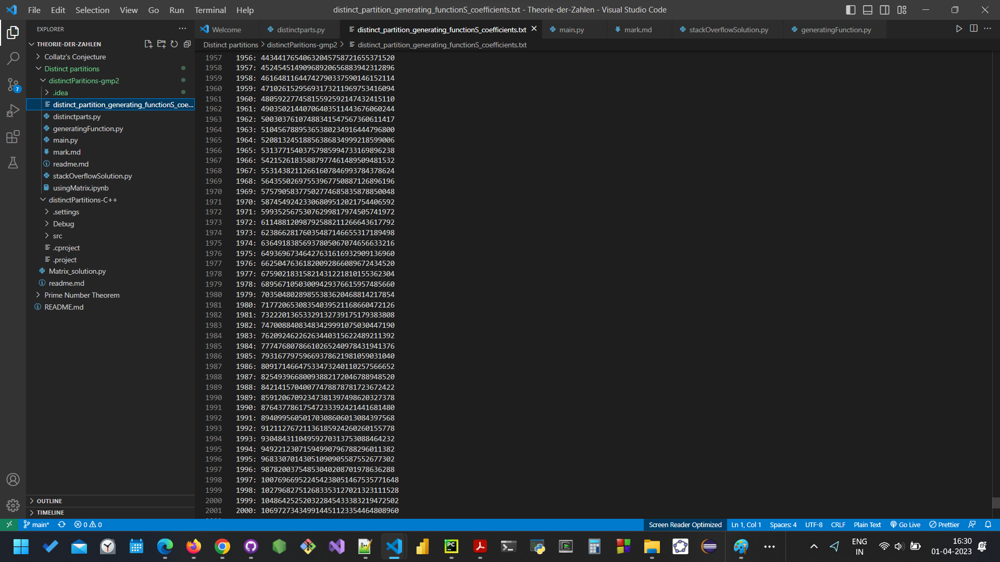

Project Euler
I have completed 100 problems on Project Euler, a challenging collection of mathematical and computational problems that require problem-solving skills and programming abilities. I used Python to solve these problems, and along the way, I developed my proficiency in areas like number theory, combinatorics, graph theory, and optimization.

Lazy Man's Payslip
I developed a Python script that extracts specific data fields from a set of payslips in PDF format. This script uses the PyPDF2 library to scan all PDF files in a directory and extract the following fields: file name, net pay, days paid, basic salary, house rent allowance, leave travel allowance, miscellaneous, city allowance, performance pay, provident fund, professional tax, PF contribution, 80D-medical premium, internet expense reimbursement, food card adjustment, total, and quarterly performance bonus.

Theorie-der-Zahlen
This repository is for projects related to number theory. Initially, I had planned to focus on prime numbers and prime number theorems, but I have recently become obsessed with integer partitions and Goldbach's conjecture.

Project Enigma
I have worked on a project called Enigma, which is a password encryption and decryption tool. This project uses a combination of encryption algorithms to convert a plain text password into an encrypted form, making it difficult for unauthorized users to access sensitive information.
The Enigma project uses a combination of a substitution cipher, a transposition cipher, and a one-time pad to encrypt the password. The substitution cipher replaces each letter of the password with a different letter or symbol, while the transposition cipher shuffles the letters of the password. The one-time pad uses a random set of characters to further encrypt the password, making it virtually unbreakable.

Red Fruit
I have developed a Pomodoro project, which is a time management technique that helps users to be more productive and efficient. This project uses a timer to break down work into intervals, traditionally 25 minutes in length, separated by short breaks.
The Pomodoro project can be customized to fit the user's needs, including the length of the work and break intervals, the number of intervals per session, and the type of alarm or notification used to signal the end of each interval.
The project is developed using Python programming language and uses the Tkinter GUI library to provide a user-friendly interface. It allows users to start and stop the timer, pause and resume sessions, and track their progress throughout the day.

Fernet's Encryption
I have developed an encryption project based on the Fernet algorithm, which is a symmetric encryption algorithm that uses a combination of cryptography techniques to encrypt and decrypt data. This project allows users to encrypt their data with a key, making it virtually impossible for unauthorized users to access their sensitive information.


{kind=link}
{kind=link}